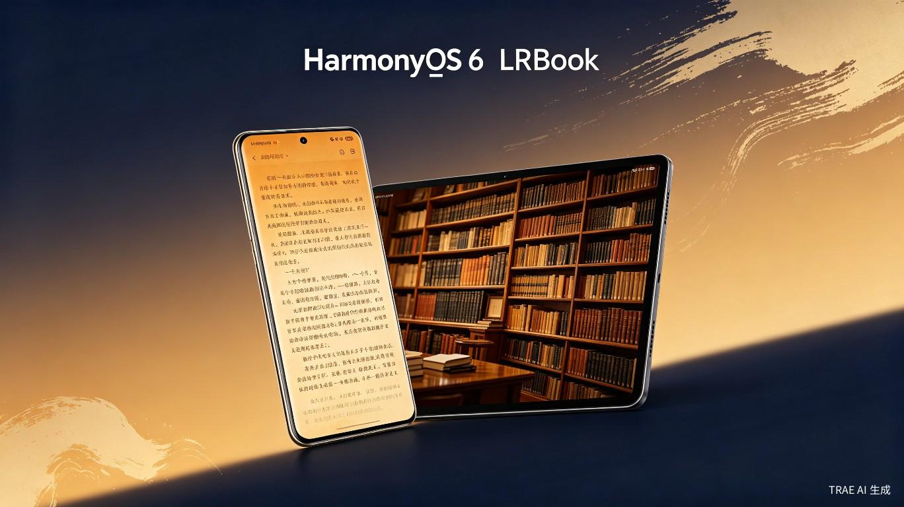
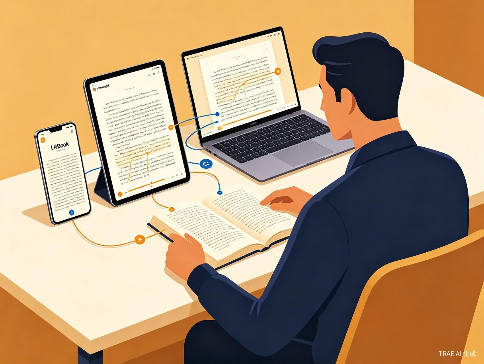
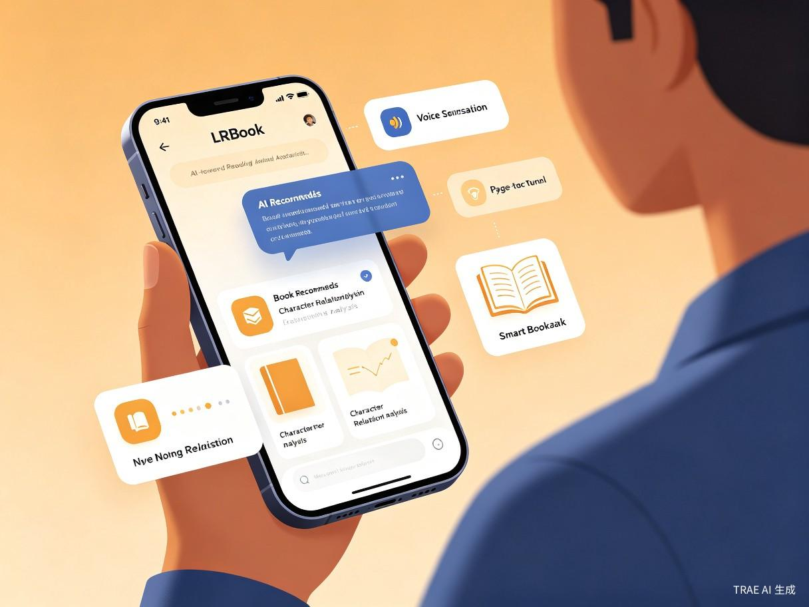

一、创意名称与介绍
创意名称：LRBook
想解决什么问题：当前主流小说阅读应用普遍存在广告泛滥打断阅读沉浸感、跨设备阅读进度不同步、AI推荐算法同质化严重三大核心痛点。免费阅读平台每阅读数章便强制插入数十秒广告，严重破坏阅读心流；而付费平台则面临价格门槛高、优质内容发现难的问题。用户迫切需要一个既能提供纯净阅读体验，又能智能推荐优质内容的阅读工具。
为什么会想到做这个：2025年10月HarmonyOS 6正式发布，2026年6月HDC 2026宣布鸿蒙生态设备突破6600万台、应用超40万款、注册开发者超1100万[1]。鸿蒙6的分布式软总线时延压缩至8ms、星闪2.0近场通信速率达12Mbps、ArkUI 4.0自适应布局等全新能力，为阅读类应用带来了前所未有的全场景体验升级空间[2]。同时，华为开放了Reader Kit排版引擎，已有500+合作伙伴接入[3]。然而，目前鸿蒙原生阅读应用多为传统平台的简单移植，尚未充分利用鸿蒙6的AI智能体框架（HMAF）和分布式能力打造真正差异化的阅读体验。
大概是什么产品：一款基于HarmonyOS 6原生开发（ArkTS + ArkUI + Stage模型）的AI驱动小说阅读器App，深度集成鸿蒙分布式能力实现多设备无缝接续阅读，搭载AI阅读助手提供智能荐书、情感分析、人物关系图谱等创新功能，主打"纯净沉浸 + AI智慧 + 全场景流转"三大差异化体验。
二、目标用户及痛点
面向哪些用户
核心用户画像
主力用户群：18-35岁的数字阅读爱好者，日均阅读时长超过1小时。涵盖大学生、职场白领、自由职业者等群体。他们拥有华为或荣耀品牌设备（手机、平板、PC），是鸿蒙生态的核心用户。
扩展用户群：35-55岁的文学爱好者，偏好严肃文学、历史传记等长篇内容，对阅读品质和护眼体验有较高要求；以及12-18岁的青少年网文读者，追求个性化推荐和社交化阅读体验。
在什么场景下使用
当前痛点分析
广告泛滥，沉浸感破碎
免费阅读平台（番茄小说MAU 2.45亿、七猫小说MAU约9500万）以广告为核心商业模式[4]，用户每阅读数章即被强制插入数十秒广告，阅读心流频繁被打断，严重影响长篇阅读体验。
跨设备体验割裂
现有阅读App的跨设备同步依赖云端服务器，存在延迟高、离线不可用等问题。用户在手机上读到一半的内容，切换到平板或PC时往往需要重新加载、定位阅读位置，体验不连贯。
推荐同质化，发现困难
算法推荐以点击率和完读率为导向，导致同质化爽文泛滥。番茄小说2025年上线近42万部新书，但大部分沦为"书库填充"[4]。真正优质的文学作品难以被用户发现，形成"劣币驱逐良币"。
版权保护不足
盗版问题依然严峻，侵权成本低、维权成本高[5]。作者创作积极性受损，优质原创内容供给不足，形成行业恶性循环。
三、产品核心特性
1. 鸿蒙6原生分布式阅读
基于鸿蒙6的分布式软总线（时延8ms）和星闪2.0近场通信技术，实现真正的"拿起即续读"体验[2]。用户在手机上阅读的小说，靠近平板时自动流转至大屏继续，阅读进度、书签、批注通过DistributedKVStore分布式数据库实时同步[6]。支持"碰一碰"分享书单给好友，手机与PC轻碰即可文件互传。

2. AI阅读助手（基于HMAF智能体框架）
深度集成鸿蒙6的HMAF智能体框架和端云一体盘古大模型[2]，打造"LRBook AI助手"，提供以下能力：
- 情感化智能荐书：不仅基于阅读历史推荐，还分析用户的情感偏好、阅读时段、批注内容，推荐"懂你"的作品
- 全书智能问答：选中任意段落即可向AI提问，获取情节解析、人物关系梳理、伏笔线索分析
- AI聊书互动：与书中角色"对话"，沉浸式探讨剧情走向和人物动机
- AI眼动翻页：利用前置摄像头追踪眼球运动，视线到达页面底部自动翻页，解放双手[3]
- 精品AI听书：基于语音大模型生成拟人化有声内容，支持多角色声线切换[3]

3. 专业级排版引擎（Reader Kit）
接入华为自研Reader Kit排版引擎，支持EPUB、TXT、MOBI、PDF等主流格式的专业级渲染[3]。提供精细的字体、行距、段距调节，深色模式、护眼模式、沉浸光感（根据环境光线智能调节屏幕）[7]。ArkUI 4.0自适应布局确保手机单列、平板双列、智慧屏瀑布流的最佳展示效果。
4. 纯净无广告的阅读体验
采用会员订阅 + 精品付费的商业模式，彻底告别广告打扰。基础书库免费开放，精品内容和AI高级功能通过月度/年度会员解锁。与版权方深度合作，确保内容正版化，保护作者权益。
技术架构概览
| 技术层 | 技术选型 | 说明 |
|---|---|---|
| 开发语言 | ArkTS | 华为自研，鸿蒙主力开发语言，声明式开发范式 |
| UI框架 | ArkUI 4.0 | 声明式UI，自适应布局，性能提升30% |
| 应用模型 | Stage模型 | 鸿蒙推荐架构，基于多Ability构建 |
| 排版引擎 | Reader Kit | 华为自研，500+合作伙伴接入 |
| AI能力 | HMAF + 盘古大模型 | 端云一体，支持离线AI对话 |
| 分布式 | 分布式软总线 + 星闪2.0 | 时延8ms，速率12Mbps |
| 数据同步 | DistributedKVStore | 阅读进度、书签跨设备实时同步 |
| 开发工具 | DevEco Studio 6.0 | 一站式开发，AI代码补全，多端调试 |
| 安全架构 | 星盾安全 | 硬件级TEE隔离，国密算法认证 |
四、价值与意义
商业价值：抢占鸿蒙原生阅读赛道先机
鸿蒙6终端设备已突破6600万台，国内市场份额达18.6%超越iOS[1]。目前已有20余款阅读类应用完成鸿蒙适配[8]，但多为传统平台移植，缺乏深度原生创新。"LRBook"作为鸿蒙原生AI阅读器，能够充分利用HMAF智能体框架和分布式能力打造差异化体验，抢占鸿蒙生态阅读赛道的第一批原生红利。中国数字阅读市场规模持续增长，番茄小说MAU达2.45亿、微信读书MAU达1.8亿[4][9]，市场空间巨大。
社会价值：推动优质内容传播与数字阅读普及
通过AI智能推荐打破"算法茧房"，让真正优质的文学作品触达更多读者。纯净无广告的阅读体验有助于培养深度阅读习惯，对抗碎片化信息时代的注意力涣散。分布式能力让偏远地区用户也能通过多设备共享获取优质阅读资源。正版化运营模式保护创作者权益，促进网络文学行业健康可持续发展。AI听书功能为视障群体提供平等的阅读机会，体现科技向善。
"鸿蒙6的分布式能力与AI智能体框架，为阅读类应用带来了从'工具'到'伙伴'的质变机遇。LRBook不仅是一个阅读器，更是一个懂你的AI阅读伴侣。"
五、竞争优势分析
| 维度 | LRBook | 番茄小说/七猫 | 微信读书 | 起点读书 |
|---|---|---|---|---|
| 广告体验 | 纯净无广告 | 广告频繁 | 基本无广告 | 少量广告 |
| AI能力 | 深度原生AI助手 | 基础推荐 | 基础AI | AI问答 |
| 分布式阅读 | 鸿蒙原生分布式 | 云端同步 | 云端同步 | 云端同步 |
| 眼动翻页 | 支持 | 不支持 | 不支持 | 部分支持[8] |
| 排版品质 | Reader Kit专业级 | 一般 | 良好 | 良好 |
| 鸿蒙适配 | 原生深度适配 | 移植适配 | 移植适配 | 移植适配 |
| 商业模式 | 会员+精品付费 | 免费+广告 | 会员+社交 | 按章付费 |
六、发展规划
第一阶段（MVP）：基础阅读 + 分布式接续
- 基于ArkTS + ArkUI 4.0 + Stage模型构建核心阅读引擎
- 接入Reader Kit实现EPUB/TXT/PDF多格式专业排版
- 实现分布式软总线多设备阅读进度同步
- 构建基础书架管理和本地导入功能
第二阶段：AI能力 + 内容生态
- 集成HMAF智能体框架，上线"LRBook AI助手"
- 接入盘古大模型实现智能问答、情感荐书、AI聊书
- 上线AI听书功能，基于语音大模型生成多角色有声内容
- 与版权方合作构建正版内容生态
第三阶段：全场景 + 社交化
- 扩展至车机、智慧屏、智能手表等全场景设备
- 上线AI眼动翻页、沉浸光感等创新交互
- 构建读者社区，支持书评分享、读书会、社交阅读
- 探索"书剧协同"IP闭环，与短剧平台联动